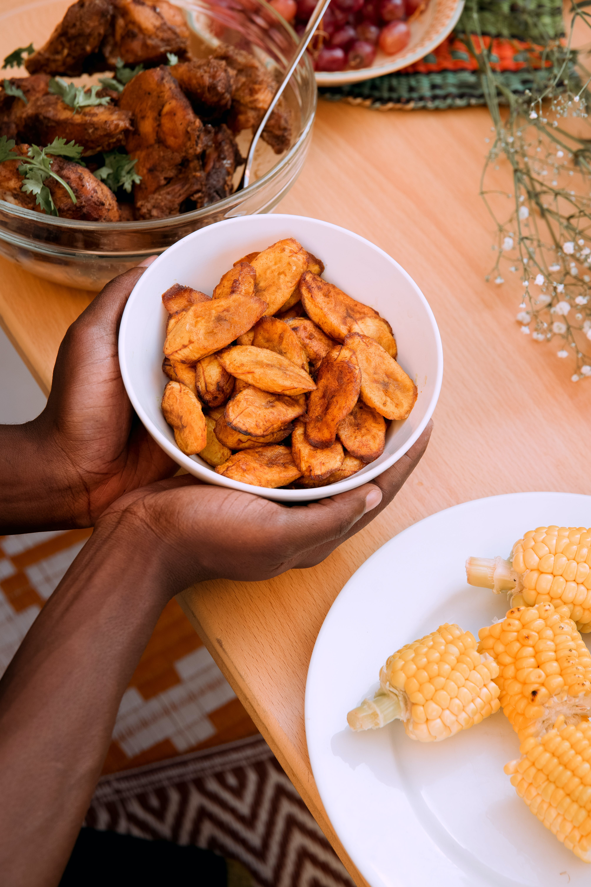
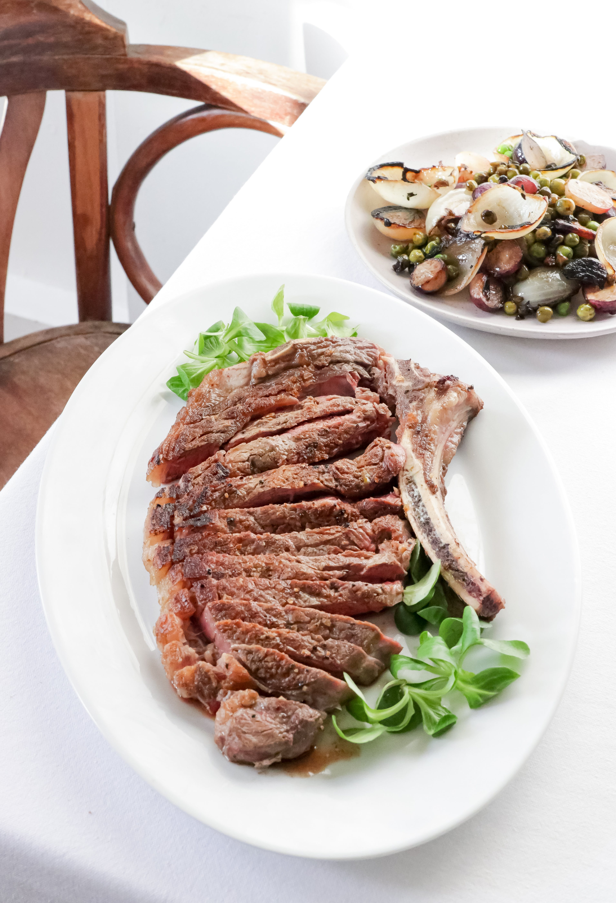
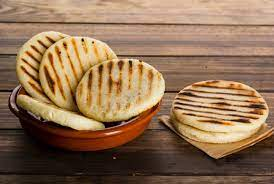
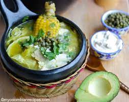
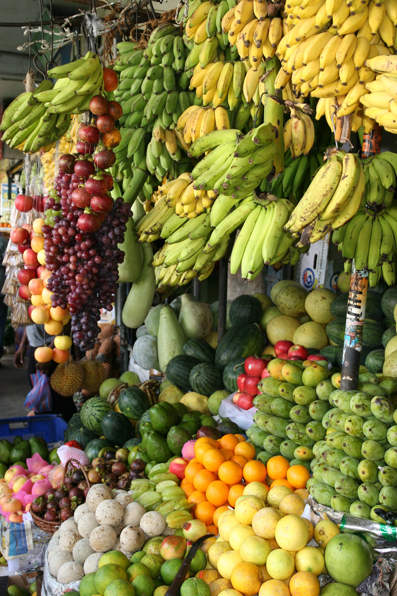
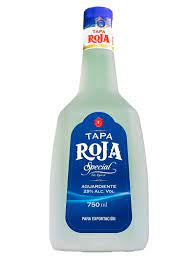

Staples
Rice, corn (especially maize), beans, and potatoes are fundamental staples in Colombian cuisine. Corn is used to make various dishes like arepas (corn cakes), tamales (steamed corn dough filled with meat or vegetables), and empanadas (deep-fried or baked pastries filled with various ingredients)

Plantains
Plantains are a ubiquitous ingredient in Colombian cooking. They can be fried, boiled, or baked, and they're often served as a side dish or snack. Patacones, for instance, are twice-fried green plantains.
Meat & Seafood
Colombians enjoy a variety of meats, including beef, chicken, and pork. Grilled meats, known as "asado," are popular, and you'll find dishes like "bandeja paisa," which includes grilled meat, chorizo, fried egg, beans, rice, and plantains. In coastal regions, seafood dishes are common, with ceviche being a popular preparation.
Arepas
Arepas are round, flat corn cakes that are a staple in Colombian cuisine. They are often split and filled with cheese, meat, or other ingredients, making them a versatile and beloved food item.
Soups & Stews
Colombian soups and stews are hearty and flavorful. Ajiaco, a chicken and potato soup, and sancocho, a hearty stew typically made with several types of meat and vegetables, are well-known examples.
Tropical Fruits
Colombia's tropical climate allows for the abundance of exotic fruits, including guava, passion fruit, mango, papaya, and lulo. These fruits are often used in beverages, desserts, or enjoyed fresh
Beverages
Colombian coffee is renowned worldwide for its quality, and coffee culture is deeply ingrained in the country. Aguardiente, a traditional anise-flavored liquor, is also popular, as are tropical fruit juices and refreshing drinks like "limonada de coco" (coconut lemonade).
Desserts
Colombian desserts often feature sweet ingredients like caramel, condensed milk, and coconut. Popular sweets include "arequipe" (a caramel-like spread), "bunuelos" (fried dough balls), and "tres leches" cake (a sponge cake soaked in three types of milk).